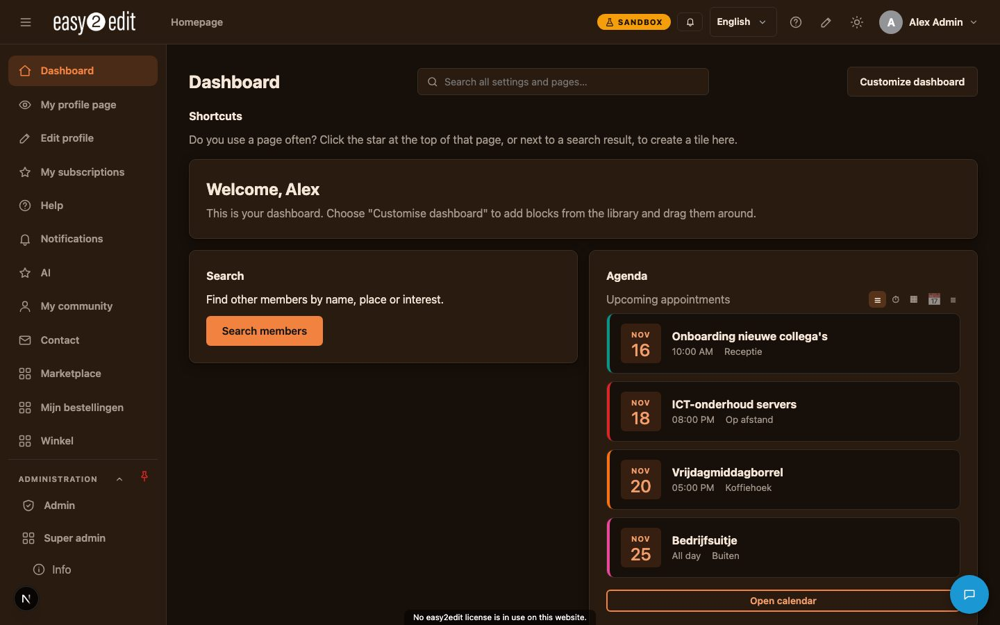
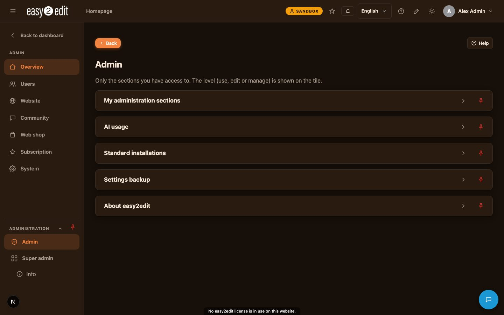
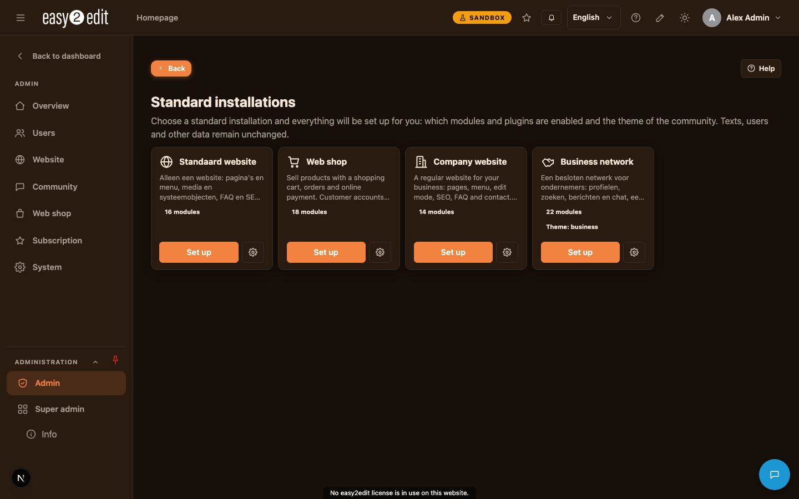

1. Introductie
Welkom bij easy2edit, een eenvoudig, modulair beheersysteem (CMS) voor het bouwen en runnen van portals, websites, webshops en communities. Deze handleiding legt uit hoe het systeem werkt en hoe je het beheert vanuit de adminschermen.
Video: Welkom bij easy2edit (Nederlandse voice-over ook in English)
Video: Resetten en sandbox-modus (Nederlandse voice-over ook in English)

Wat is easy2edit#
Met easy2edit bouw je een website uit blokken. In plaats van code te schrijven, zet je modules en plugins aan of uit, en rangschik je blokken op je pagina's om de site te maken die je nodig hebt. Onder de motorkap draait easy2edit op een Django (REST) backend met een Next.js frontend, maar als admin hoef je de technische details niet te kennen om je site dagelijks te beheren.
Omdat het systeem modulair is, gebruik je alleen de onderdelen die je echt nodig hebt. Een eenvoudige website draait met slechts een handvol ingeschakelde modules, terwijl een grotere community of marktplaats veel meer kan gebruiken. Plugins breiden dit verder uit door ondertekende uitbreidingspakketten toe te voegen die hun eigen pagina's en modules meebrengen.

Wie gebruikt easy2edit#
Er zijn drie soorten mensen die met het systeem werken:
- Gebruikers: bezoekers die een account hebben aangemaakt op de site. Zij gebruiken de voorkant van de site, zoals het bekijken van pagina's, deelnemen aan een community of het plaatsen van bestellingen in een webshop.
- Admins: mensen die onderdelen van de site beheren. Wat een admin kan zien en doen, hangt af van de rollen die aan hen zijn toegewezen. De ene admin beheert misschien alleen pagina's en content, terwijl een andere admin gebruikers of bestellingen beheert, afhankelijk van zijn of haar rol.
- Superadmins: de eigenaar of reseller van de installatie. Een superadmin heeft toegang tot alles, inclusief systeeminstellingen, modules, plugins, prijzen en de licentie. Dit is het hoogste niveau van controle in easy2edit.

Het dashboard#
Wanneer je inlogt, werk je vanuit het dashboard. Het is ingedeeld in drie gebieden:
- Dashboard: je eigen profiel, meldingen en je eigen AI-tegoed.
- Admin: het beheergebied, waar admins en superadmins de onderdelen van de site beheren waar ze verantwoordelijk voor zijn.
- Super admin: het systeemgebied, alleen beschikbaar voor superadmins, voor systeembrede instellingen zoals modules, plugins, prijzen en de licentie.
Modules en plugins#
Modules zijn onderdelen van het systeem die je aan of uit kunt zetten. Je beheert ze bij Super admin > Modules. Als je een module aanzet, worden de bijbehorende functies beschikbaar op de site; als je hem uitzet, worden ze weer verborgen.
Plugins zijn ondertekende uitbreidingspakketten die hun eigen pagina's en modules meebrengen. Je beheert plugins bij Admin > Plugins. Het installeren en activeren van een plugin kan nieuwe modules en nieuwe pagina's aan je site toevoegen, waardoor easy2edit meer kan dan het kernsysteem alleen.
Twee modules maken altijd deel uit van elke site en kunnen niet worden uitgezet: Energie & uitstoot en Energie: verzamelmodule. Dit zijn kernmodules en staan bij elke installatie standaard aan.
Standaard installaties#
Om het makkelijk te maken om een nieuwe site te starten, biedt easy2edit standaard installaties. Met één klik stelt een standaard installatie de modules, plugins en het thema in voor een bepaald type website, zoals een standaard website, webshop, bedrijfswebsite, zakelijk netwerk, intranet, datingplatform, sportclub, stichting, marktplaats of speelhal.
Er is ook een testinstallatie genaamd "easy2edit max", die alles aanzet: alle modules en alle plugins, met overal demo-gegevens. Dit is handig om de volledige reikwijdte van wat easy2edit kan te verkennen.
Elke installatie wordt getoond als een kleine tegel met een instellingen-pop-up. Deze pop-up is zichtbaar in het beheergebied, en wordt ook aangeboden de eerste keer dat een installatie wordt ingesteld. Hiermee kun je de AI-creditinstellingen, modules, plugins en demo-gegevens voor die installatie configureren. De pop-up heeft vijf tabbladen: Algemeen, AI, Modules, Plugins en Demo-gegevens.
Op het tabblad Plugins ziet een superbeheerder een schakelaar voor elke plugin en elke module die bij de installatie hoort. Elke wijziging die hier wordt gemaakt, wordt direct opgeslagen als de standaardopzet voor de volgende keer dat dat type installatie wordt ingesteld, en wordt weggeschreven naar het installatiesbestand (backend/apps/core/installations.json) dat andere sites bij een update ontvangen. Een beheerder die hetzelfde tabblad bekijkt, ziet dezelfde lijst, maar alleen-lezen, zodat hij kan zien wat er is geconfigureerd zonder het te kunnen wijzigen.
De header#
Bovenaan het scherm geeft de header je snel toegang tot:
- De taalkiezer, om de weergavetaal te wijzigen.
- De bewerkmodusschakelaar (potloodicoon), om het bewerken van pagina's aan of uit te zetten.
- Lichte en donkere stand, om het visuele thema te wijzigen.
- Het gebruikersmenu, voor je accountopties.
Hulp krijgen#
Hulp is altijd binnen handbereik. Op elke pagina in het Beheer- en Superbeheergebied opent een Hulp-knop (een vraagtekenicoon naast de terugknop) deze handleiding in een pop-up, direct bij het hoofdstuk dat relevant is voor de pagina die je bekijkt.
Op de startpagina van het Beheer vind je, onder Over easy2edit, twee grote knoppen waarmee je de volledige handleiding kunt openen: de ene opent de HTML-versie, in een pop-up of in een nieuw browsertabblad, en de andere biedt een PDF-download aan. De handleiding is in het Engels geschreven.